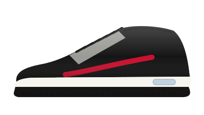
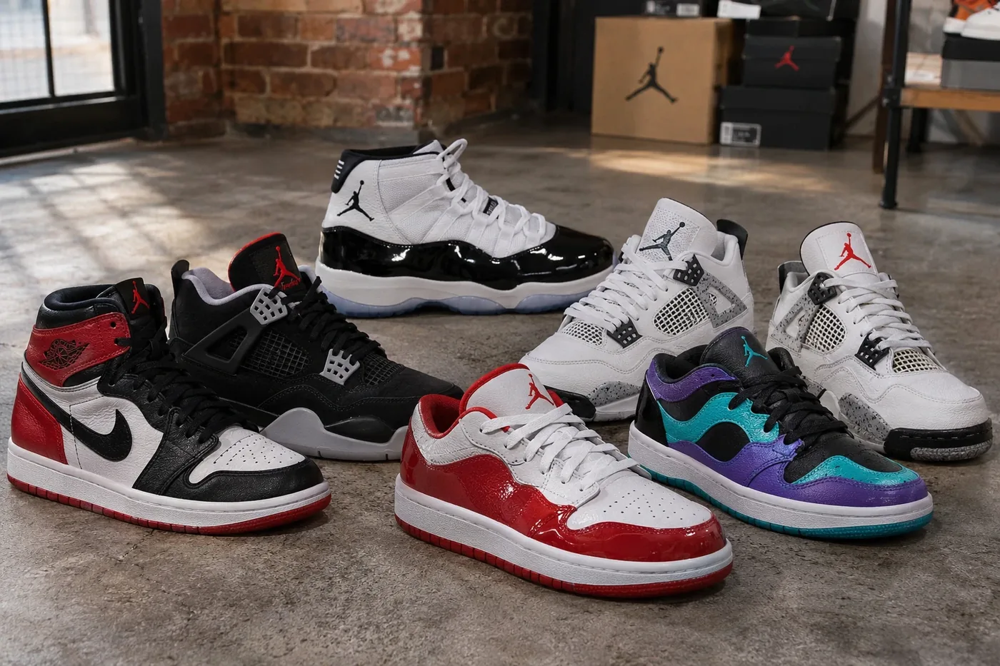
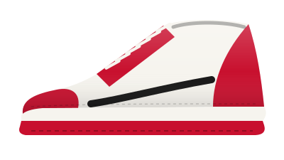
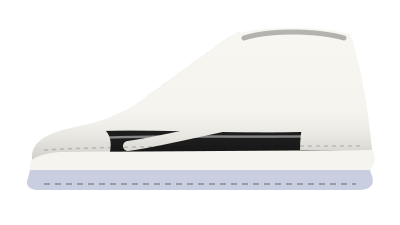

Jordan CornerBrno · Masarykova 21
Scroll
Létání se dánaučit.Air Jordan od roku 1985
Air Jordan v Brně. Retro klasiky, nové releasy a každý pár s ověřenou pravostí. Vyzkoušíš si ho dřív, než zaplatíš.

Jordan kolekce 2026
Tři ikony,
které nikdy nestárnou
Nejžádanější retro modely v prodejně. Všechny skladem ve velikostech EU 40 až 45 a každý pár s certifikátem pravosti.
Celá kolekce, Jordan i Nike
Air Jordan 1 Retro High OG „Chicago“
Bota, kterou to celé začalo. Červená, bílá a černá v plné kůži a vysoký kotník, jak ho nosila hala v roce 1985.
4 999 Kč
EU 40–45
Air Jordan 4 Retro „Bred“
Kůže, síťované panely a viditelná Air jednotka v patě. Skladem v 8 barvách, od Bred po Tour Yellow.
5 499 Kč
EU 40–45

Air Jordan 11 Retro „Concord“
Lakovaná kůže, která se leskne i pod světly palubovky. Nejelegantnější Jordanka všech dob.
5 999 Kč
EU 40–45
Jak to funguje
Od výběru
po první krok
Online si vybereš, v prodejně si vyzkoušíš. Čtyři kroky, žádná platba předem.
- 01
Vyber pár
Projdi kolekci nebo detail boty a vyber model, barvu a velikost.
- 02
Rezervuj
Napiš nám přes formulář nebo e-mail. Pár ti podržíme 3 dny zdarma.
- 03
Vyzkoušej
V prodejně na Masarykově ti boty připravíme. Obuješ si je a projdeš se v nich.
- 04
Zaplať a odnes
Platíš až při vyzvednutí, a jen když ti bota sedí. Certifikát pravosti dostaneš k páru.
Kdo jsme
Obchod, který žije sneakery
Prodejna se specializací na Air Jordan, s ověřováním pravosti, péčí o boty a releasy, na které se stojí fronta. Radíme s velikostí i s výběrem barvy.
O násSlužby v prodejně
Víc než
krabice s botami
Pravost, péče a klub. Ceny platí pro jeden pár.
Všechny službyRestaurace
od 490 Kč- Hloubkové čištění
- Deoxidace zažloutlých podrážek
- Oprava laku, hotovo do 5 dnů
Ověření pravosti
390 Kč- Kontrola podle 27 bodů pod UV lampou
- Srovnání s referenčním párem
- Certifikát s fotkami, na počkání
Klub Yavuz
zdarma- 5 % z každého nákupu zpět
- Dvojitá šance v raffle
- 20 % sleva na ověření a restauraci
Bez rizika
Když bota nesedí, nekupuješ ji
Nic neplatíš předem. Pár si rezervuješ, vyzkoušíš v prodejně a zaplatíš, jen když je přesně ten pravý. Pravost máš černé na bílém.
Rezervovat pár- Vyzkoušíš před placením. Obuješ si je v prodejně, projdeš se, porovnáš velikosti.
- Platíš až při vyzvednutí. Rezervace ani odložení páru nic nestojí.
- Odložení na 3 dny zdarma. Pár ti podržíme, ať máš čas dojet.
- Certifikát pravosti ke každému páru. Ověřeno podle 27 bodů s fotkami.
Časté otázky
Na co se
ptáte nejčastěji
Nenašel jsi odpověď? Napiš nám přes kontaktní formulář.
KontaktJsou boty originální?
Ano. Každý pár, který projde pultem, prochází naším ověřením pravosti podle 27 bodů: šití, lepení, materiály, štítky i krabice, porovnané s referenčními páry. K páru dostaneš certifikát s fotkami.
Co když mi velikost nesedí?
Retro Jordanky jsou střižené užší, proto doporučujeme přičíst k délce chodidla 0,5 cm (u AJ11 o půl čísla víc). Hlavně si ale boty v prodejně vyzkoušíš dřív, než zaplatíš. Když nesedí, nekupuješ je.
Musím platit předem?
Ne. Rezervace i odložení páru na 3 dny jsou zdarma a platba proběhne až při vyzvednutí v prodejně.
Je raffle férový?
Limitované páry losujeme, jeden pár na osobu, a nedržíme je pro přeprodejce. Přihlásit se můžeš v prodejně nebo formulářem.
Prodejna v centru Brna
Přijď si obout ikonu
Napiš, který model a velikost chceš, a připravíme ho k vyzkoušení.
- Masarykova 21, 602 00 Brno
3 minuty pěšky z hlavního nádraží - Po–Pá 9:00–19:00
So 9:00–14:00 · Ne zavřeno